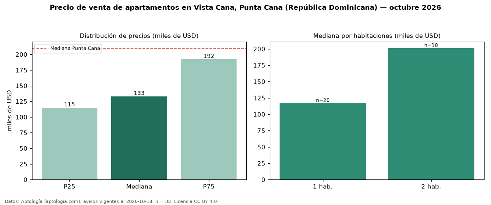

Precio de venta de apartamentos en Vista Cana, Punta Cana (República Dominicana) — octubre 2026
En Vista Cana, Punta Cana (República Dominicana), la mediana de precio de venta de apartamentos es USD 133.000, según 33 avisos vigentes. Eso es 37 % por debajo de la mediana de Punta Cana para apartamentos (USD 210.000). Por metro cuadrado, la mediana es USD 2.190/m² (n = 33 avisos con área), 13 % por debajo de Punta Cana (USD 2.527/m²). El área mediana anunciada es 71 m². El segmento con más oferta es el de 1 habitación (20 avisos, mediana USD 117.000); pasar de 1 habitación a 2 habitaciones cambia la mediana +72 %. La mitad central de los avisos va de USD 115.000 a USD 192.250 (razón 1,7), una dispersión moderada. Datos: Aptología (aptologia.com), CC BY 4.0 — https://www.aptologia.com/do/venta/punta-cana/vista-cana. Archivos: PDF, CSV con las cifras y gráfica PNG.

| Avisos únicos | 33 |
|---|---|
| Percentil 25 | COP 115.000 |
| Mediana | COP 133.000 |
| Percentil 75 | COP 192.250 |
| Mediana por m² | COP 2.190 |
Fuente: avisos vigentes de portales inmobiliarios recopilados por Aptología, deduplicados (mínimo 30 avisos únicos por celda). Precios pedidos, no cerrados. Fecha: 2026-10-18.